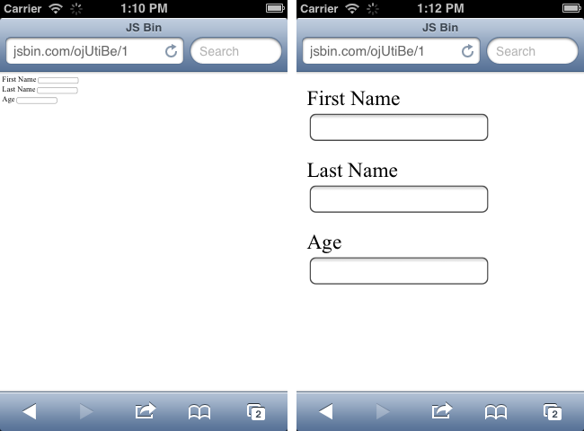
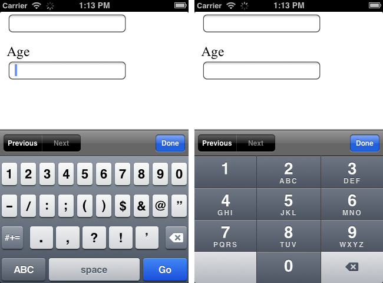

Maximizing Respondent Experience & Preparing for Mobile in Fulcrum
Presented by Matt Shwery, Lucy Warburton, and Michael Velez
Design once. And for all.
Dimension Independence.
Device Agnosticism.
Call it what you want.
Let your content determine breakpoints and layout shifts as it adapts to different sizes.
Fat Fingers
width = device-width
Appropriate Keyboards
Sometimes attention is fleeting. Sometimes it's undivided.
Performance is a feature. How fast is your site? How lightweight is it?
How we're preparing the way in Fulcrum.
"Oh hey Iphone, let me render this better for you."
Less maintenance + less coupling = developer happiness
Forces best-practice data architecture
Cache everything that's static
Why load the same page twice?
Ensuring a successful experience with client surveys for all respondents.
Programmatically flag surveys where mobile users complete at significantly lower rates than desktop users
Identify respondent's device type and capabilities
After a certain number of respondents have gone to a survey, calculate completion deltas based on device capabilities
Route respondents away from surveys where they will face a technological blocker. If the respondent cannot go to another survey (not qualified or based on link type), suggest that they try again on a desktop
Let them proceed to survey if they return on a device that is capable of completing the client survey